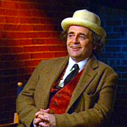
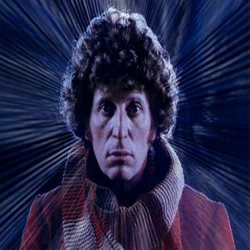
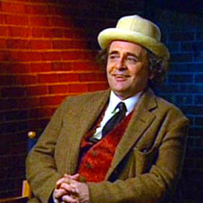
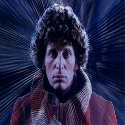

ne
ne| Home | The Doctors | The Companions | The Villains |
| ne |
|||
|
The Doctors HomepageAbout Doctor Who the TV SeriesDoctor Who was originally intended to be a family educational TV programme. Two of the original main characters were science and history teachers. A lot of the early stories were pure historicals with no aliens. These historical stories were phased out at the end of the 60’s as the more alien settings increased in popularity.
|
 
